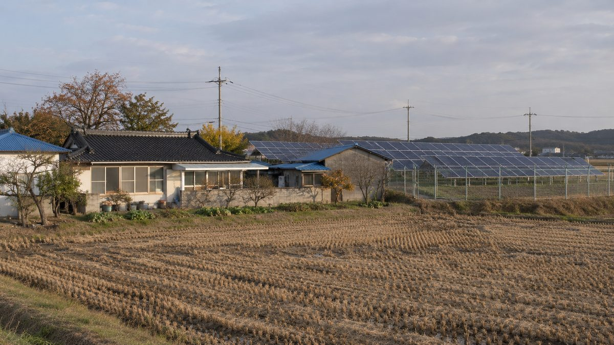

당진 합덕·우강·면천 마을 3곳 태양광 반발…이격거리 상한 시행 뒤 시는 "자의적으로 막기 어렵다"

성동리 주민 80여 명 진정, 송산3리 73명 반대 서명…당진시 심사 중인 발전사업 180여 건
충남 당진시 농촌 마을 세 곳에서 대규모 태양광 발전시설을 둘러싼 주민 반발이 잇따르고 있다. 합덕읍 성동리에서는 약 2만3,000㎡ 땅에 1,000kW가 넘는 시설이 추진되자 주민 80여 명이 당진시에 두 차례 진정서를 냈고, 지역 단체 7~8곳이 반대에 뜻을 모았다. 우강면 송산3리에서는 기존 약 1만6,500㎡ 시설 옆에 약 3만3,000㎡ 증설이 추진되자 주민들이 지난달 임시총회에서 만장일치로 반대를 결의하고 73명이 서명했으며, 사업자가 마을 발전기금을 내세워 주민을 갈라놓는다고 주장했다. 면천면 문봉리에서는 예정지 반경 50m 안 7가구가 인접 가구 동의가 빠졌다며 시청 앞에서 항의했고, 시는 공사계획 신고 없이 진행된 공사를 적발해 고발과 과징금 절차를 밟고 있다. 9월 18일부터 시행된 신재생에너지법 시행령 개정으로 지자체마다 100~1,000m였던 태양광 이격거리가 주택 5호 이상 주거지역 기준 최대 200m로 상한이 정해졌고, 당진시 미래에너지과에는 180여 건의 발전사업이 심사를 기다리고 있다. 당진시 관계자는 법적 기준을 갖춘 신청을 "자의적으로 막기는 어렵다"고 말했다.
시민에너지 관점
이격거리 상한이 생긴 뒤 한 시에만 180여 건이 몰렸다는 것은 거리 규제만으로는 갈등을 풀 수 없다는 뜻이다. 주민이 반대하는 이유는 태양광 자체보다 외부 사업자가 마을 땅에서 이익을 가져가고 발전기금으로 주민을 나누는 방식에 있다. 독일과 덴마크처럼 주민이 협동조합으로 지분을 갖고 수익을 나누는 사업은 같은 설비도 마을의 소득원이 된다. 당진시와 충남도는 허가 심사에 주민 참여·이익공유 계획을 요구하고, 주민이 직접 추진하는 햇빛소득마을 모델을 먼저 넓혀야 한다.
출처: 당진시대 2026-11-06 최운연 원문 보기
唐津の合徳・牛江・沔川の3集落で太陽光に反発…離隔距離の上限施行後、市は「恣意的に止めるのは難しい」
城東里の住民80人余りが陳情、松山3里は73人が反対署名…唐津市で審査中の発電事業は180件余り
韓国・忠清南道唐津市の農村集落3か所で、大規模太陽光発電施設をめぐる住民の反発が相次いでいる。合徳邑城東里では、約2万3,000㎡の土地に1,000kWを超える施設が計画され、住民80人余りが唐津市に2度陳情書を出し、地域団体7〜8か所が反対で足並みをそろえた。牛江面松山3里では既存の約1万6,500㎡の施設の隣に約3万3,000㎡の増設が進められ、住民は先月の臨時総会で全会一致で反対を決議して73人が署名し、事業者が村の発展基金を前面に出して住民を分断していると主張した。沔川面文峰里では予定地から半径50m以内の7世帯が、隣接世帯の同意が抜けているとして市役所前で抗議し、市は工事計画の届け出なしに進められた工事を摘発して告発と課徴金の手続きを進めている。9月18日に施行された新再生エネルギー法施行令の改正で、自治体ごとに100〜1,000mだった太陽光の離隔距離は、住宅5戸以上の住居地域を基準に最大200mの上限が定められ、唐津市未来エネルギー課では180件余りの発電事業が審査を待っている。唐津市の関係者は、法的基準を満たした申請を「恣意的に止めるのは難しい」と述べた。
市民エネルギーの視点
離隔距離に上限ができた後、一つの市だけで180件余りが集まったことは、距離規制だけでは対立を解けないことを示している。住民が反対する理由は太陽光そのものより、外部の事業者が村の土地から利益を持ち出し、発展基金で住民を分断するやり方にある。ドイツやデンマークのように住民が協同組合で持分を持ち収益を分け合う事業なら、同じ設備も村の収入源になる。唐津市と忠清南道は許可審査で住民参加・利益共有の計画を求め、住民が自ら進める「日差し所得村」モデルをまず広げるべきだ。
出典: 당진시대 2026-11-06 최운연 原文を読む
唐津合德、牛江、沔川3个村庄反对光伏…间距上限施行后市政府称"难以任意阻止"
城东里80余名居民陈情，松山3里73人联署反对…唐津市审查中的发电项目达180余件
韩国忠清南道唐津市3个农村村庄接连出现居民反对大型光伏发电设施的情况。合德邑城东里约2万3,000平方米土地上规划了超过1,000kW的设施，80余名居民两次向唐津市提交陈情书，7至8个地方团体联合表示反对。牛江面松山3里在现有约1万6,500平方米设施旁推进约3万3,000平方米扩建，居民上月召开临时大会一致决议反对，73人联署，并称开发商以村庄发展基金为名分化居民。沔川面文峰里预定地半径50米内的7户居民以缺少相邻住户同意为由在市政府前抗议，市政府查处了未申报施工计划的工程，正在走告发和罚款程序。随着9月18日施行的《新再生能源法》施行令修订，各地方原本为100至1,000米的光伏间距被设定上限，以5户以上住宅的居住区为准最多200米，唐津市未来能源科目前有180余件发电项目等待审查。唐津市有关人士表示，对于符合法定标准的申请"难以任意阻止"。
市民能源视角
间距设上限后仅一个市就涌入180余件申请，说明仅靠距离规制无法化解冲突。居民反对的原因与其说是光伏本身，不如说是外部开发商从村庄土地上拿走利益、用发展基金分化居民的做法。像德国和丹麦那样由居民通过合作社持股、共享收益的项目，同样的设施也能成为村庄的收入来源。唐津市和忠清南道应在许可审查中要求居民参与和收益共享计划，并优先推广由居民自主推进的"阳光收入村"模式。
来源: 당진시대 2026-11-06 최운연 查看原文
Three Villages in Dangjin Push Back Against Solar; After Setback Cap, City Says It "Cannot Arbitrarily Block" Applications
More than 80 residents petition in Seongdong-ri, 73 sign opposition in Songsan 3-ri; some 180 power projects under review in Dangjin
Resident opposition to large solar power facilities is spreading in three farming villages in Dangjin, South Chungcheong Province, South Korea. In Seongdong-ri, Hapdeok-eup, where a facility of more than 1,000kW is planned on about 23,000 square metres, more than 80 residents have twice petitioned the city and seven or eight local groups have joined the opposition. In Songsan 3-ri, Ugang-myeon, where an expansion of about 33,000 square metres is planned next to an existing site of about 16,500 square metres, residents unanimously voted against it at an extraordinary meeting last month and 73 signed a petition, claiming the developer is dividing the village by dangling a village development fund. In Munbong-ri, Myeoncheon-myeon, seven households within 50 metres of the planned site protested in front of city hall, saying consent from neighbouring households was missing, and the city has reported unpermitted construction to police and begun penalty proceedings. Under the amended enforcement decree of the New and Renewable Energy Act that took effect on 18 September, solar setback distances that had ranged from 100 to 1,000 metres by local ordinance are now capped at a maximum of 200 metres from residential areas of five or more homes, and some 180 power projects are awaiting review at the city's Future Energy Division. A city official said it is difficult to "arbitrarily block" applications that meet legal standards.
Citizen Energy View
That some 180 applications have piled up in a single city since the setback cap shows distance rules alone cannot resolve conflict. Residents object less to solar itself than to outside developers taking profits from village land and splitting communities with development funds. In Germany and Denmark, projects in which residents hold equity through cooperatives and share revenue turn the same equipment into village income. Dangjin and South Chungcheong should require resident participation and benefit-sharing plans in permit reviews and first expand the resident-led Sunshine Income Village model.
Source: 당진시대 2026-11-06 최운연 Read the original